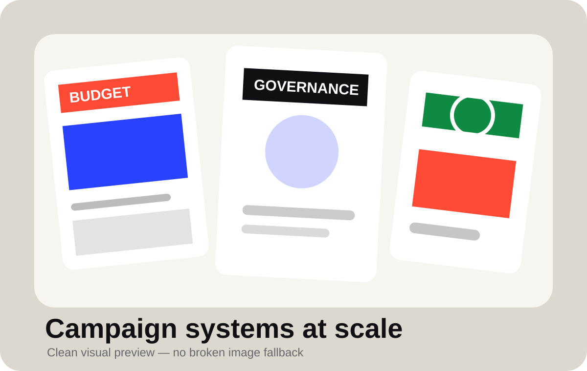
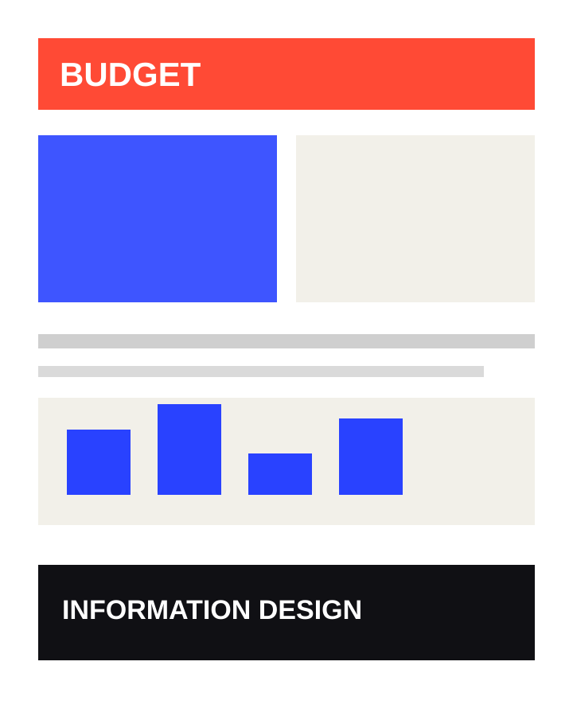
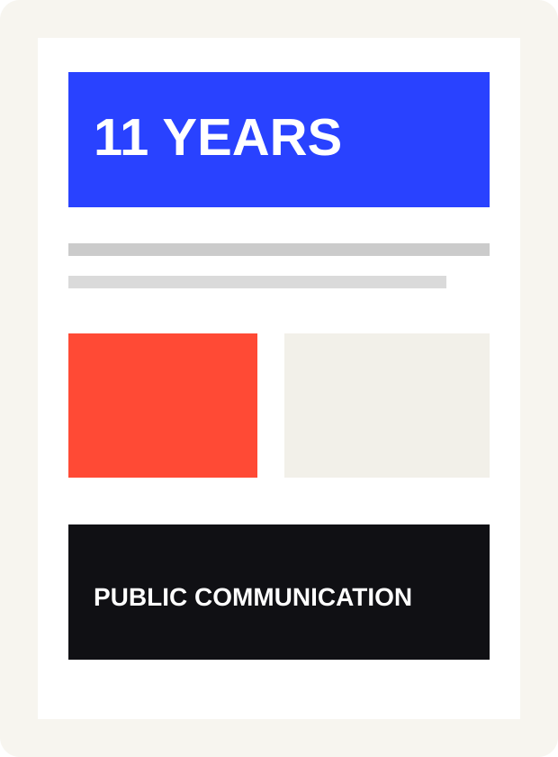

Turn policy, governance, development and campaign narratives into layouts people can understand quickly.
03 / Creative direction · public communication
Campaign
Systems &
Public
Communication
High-volume campaign, editorial and print systems built to make complex public messages clear, scalable and immediately readable across newspaper, pamphlet and digital formats.

REAL WORK PREVIEWTHE CHALLENGE
Make dense messaging feel clear at speed.
Maintain visual authority across newspaper ads, pamphlets, social assets, outdoor formats and campaign extensions.
Build repeatable systems that help teams move fast without losing hierarchy, consistency or quality control.
SYSTEM THINKING
One visual language,
many delivery formats.
Editorial Hierarchy
Headlines, stats, proof points and supporting copy organized for scanning and retention.
Campaign Identity
Visual structures that remain recognizable across subjects, languages and output sizes.
Production Scale
Designed for high-volume timelines where clarity and consistency need to survive fast turnarounds.
Creative QC
Hands-on art direction, review discipline and delivery thinking across the wider campaign ecosystem.
CAMPAIGN VISUAL LIBRARY
Proof across newspaper,
pamphlet and public formats.

01 / NewspaperEditorial advertising system
Large-format newspaper communication designed for quick scanning, clear hierarchy and immediate public-message comprehension.

02 / PamphletLong-form public information
Dense content structured into a readable page system without losing authority, proof-point clarity or visual rhythm.
03 / GovernanceRegional communication format
Adaptable visual language built for region-specific campaign and public communication needs.
FULL-WIDTH VISUAL PROOF
Print work shown as a system, not as single assets.
This section shows the range together: newspaper advertising, editorial public communication and pamphlet-style information design. The purpose is to help recruiters immediately understand scale, production depth and format range.
SUPPORTING VISUALS
Six real-work angles
from the same capability.
ROLE AND IMPACT
Built for clarity,
speed and senior-level design direction.
360°CAMPAIGN OUTPUT RANGE
PrintNEWSPAPER / PAMPHLET
SocialDIGITAL EXTENSIONS
QCCREATIVE REVIEW SYSTEM